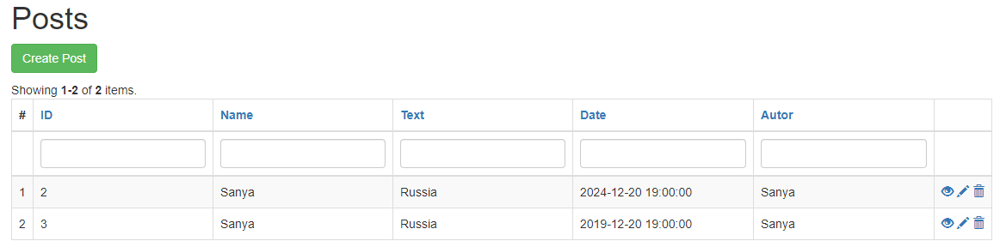

Документация по билету №8 (страница 1)
В ходе данного задания была поставленна задача разработать CRUD таблицу "Post":
На стадии проектирования был вявлен необходимый функционал
Cоздать таблицу "пост" в базе данных с полями "название","текст","дата создания","автор".
Выводить информацию из базы данных в CRUD таблицу.
Реалезовать стандартные операции работами с CRUD-таблицами (создание, удаления, изменение).
Создать репозиторий на GitHub, куда поместить все изменения.
Создать документацию из двух страниц github.io.
На этапе проектирования был создан примерный шаблон CRUD-таблицы (рисунок 1.1):

рисунок 1.1(макет CRUD-таблицы)